Décrire une consonne
3.1 Définitions
3.1.1 Qu’est-ce qu’une consonne ?
- Définition articulatoire : le son résulte d’une modification du conduit vocal, une constriction ou une occlusion
- Définition traditionnelle : un bruit de frottement ou d’explosion produit par le souffle, voisé ou non, qui rencontre un obstacle dans la bouche (Grevisse & Goosse 1991 : 40)
Trois propriétés essentielles
- L’air rencontre un obstacle, total ou partiel, en un ou plusieurs points du conduit vocal
- Cet obstacle provoque un bruit
- Une consonne ne peut pas constituer une syllabe à elle seule (en français)
3.2 Les lieux d’articulation
3.2.1 Vue d’ensemble
- Bilabial – p, b, m, ʙ, ɸ, β
- Labiodental – f, v, ɱ, ʋ
- Dental – t̪, d̪, n̪, θ, ð
- Alvéolaire – t, d, n, s, z, ɾ, r, l
- Rétroflexe – ʈ, ɖ, ɳ, ʂ, ʐ, ɽ, ɭ
- Palato-alvéolaire (postalvéolaire) – ʃ, ʒ, tʃ, dʒ
- Palatal – c, ɟ, ɲ, ç, ʝ, j
- Vélaire – k, ɡ, ŋ, x, ɣ
- Uvulaire – q, ɢ, ɴ, χ, ʁ
- Pharyngal – ħ, ʕ
Un articulateur actif et une cible
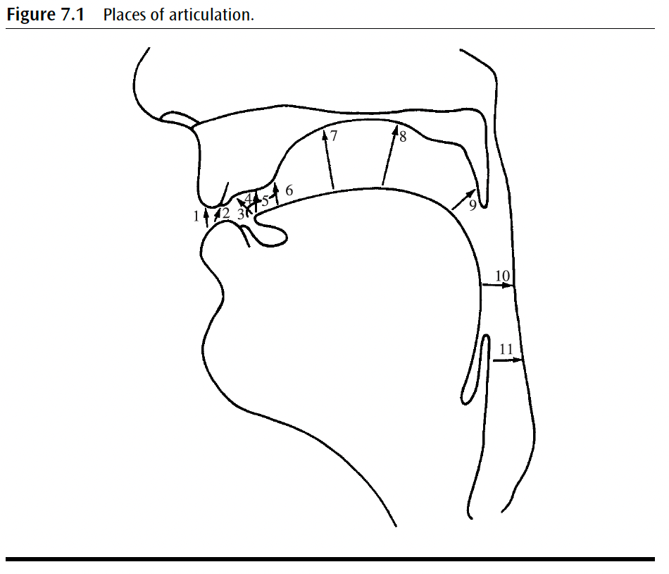
3.2.2 Bilabiales
Bilabiales p, b, m, ʙ, ɸ, β
💪 Articulateur actif : lèvre inférieure
🎯 Cible : lèvre supérieure
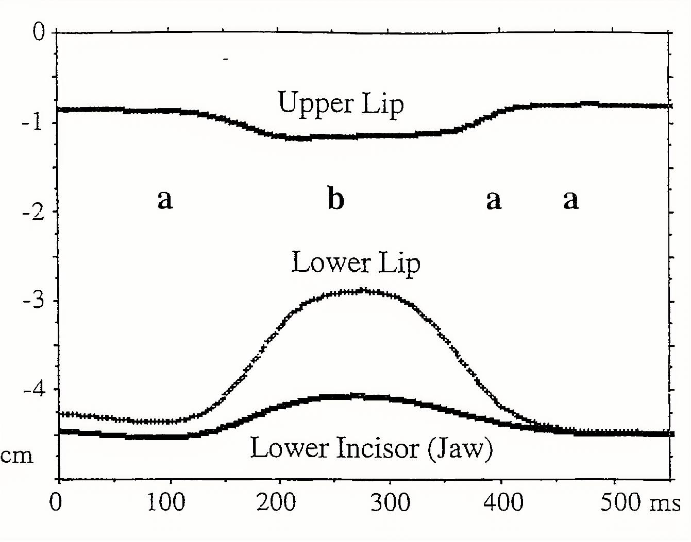
3.2.3 Bilabiales : le ventriloque
Bilabiales p, b, m, ʙ, ɸ, β
💪 Articulateur actif : lèvre inférieure
🎯 Cible : lèvre supérieure
Le ventriloque…
3.2.4 Labiodentales
Labiodentales f, v, ɱ, ʋ
💪 Articulateur actif : lèvre inférieure
🎯 Cible : incisives supérieures
En français : [f] fée, [v] voûte
3.2.5 Dentales et alvéolaires
Alvéolaires t, d, n, s, z, r, l
💪 Articulateur actif : pointe de la langue (apicale)
🎯 Cible : alvéoles
En français, [t, d, n] sont plutôt dentales (langue contre les incisives supérieures), alors qu’en anglais elles sont alvéolaires. La tradition grammaticale française regroupe [t, d, s, z, n, l] sous l’étiquette « dentales » (ou apico-dentales).
3.2.6 Palato-alvéolaires
Palato-alvéolaires ʃ, ʒ
💪 Articulateur actif : lame de la langue (laminale)
🎯 Cible : arrière de la crête alvéolaire
- En français : [ʃ] chou, [ʒ] journal. La tradition française les classe parmi les « palatales ».
3.2.7 Palatales
Palatales c, ɟ, ɲ, ç, ʝ, j
💪 Articulateur actif : lame/dos de la langue
🎯 Cible : palais dur
- En français : [ɲ] vigne et la semi-voyelle [j] viens
3.2.8 Vélaires
Vélaires k, ɡ, ŋ, x, ɣ
💪 Articulateur actif : dos de la langue
🎯 Cible : palais mou (voile du palais)
En français : [k] cou, [ɡ] goût, [ŋ] camping (emprunts)
3.2.9 Uvulaires
Uvulaires q, ɢ, ɴ, χ, ʁ
💪 Articulateur actif : dos de la langue
🎯 Cible : luette
- En français : [ʁ] rage (souvent classé « vélaire » dans la tradition française)
- Produisez la fricative vélaire [x] et, tout en maintenant le son, reculez la langue. Essayez [aχa], puis alternez le voisement [χχχʁʁʁχχχʁʁʁ].
3.2.10 Doubles articulations
Labio-vélaire w
💪 Articulateurs actifs : lèvre inférieure + dos de la langue
🎯 Cibles : lèvre supérieure + voile du palais
Labio-palatale ɥ
💪 Articulateurs actifs : lèvres + dos de la langue
🎯 Cibles : arrondissement des lèvres + palais dur
3.3 Le voisement
3.3.1 Sourdes et sonores
- Sonores : vibration des plis vocaux pendant la consonne
- [b], [d], [ɡ], [v], [z], [ʒ]…
- Sourdes : pas de vibration des plis vocaux
- [p], [t], [k], [f], [s], [ʃ]…
- Les nasales, les liquides et les semi-voyelles sont sonores par défaut
Mais la réalité phonétique du contraste « sourd/sonore » varie d’une langue à l’autre…
3.3.2 Variation interlinguistique : « tea »
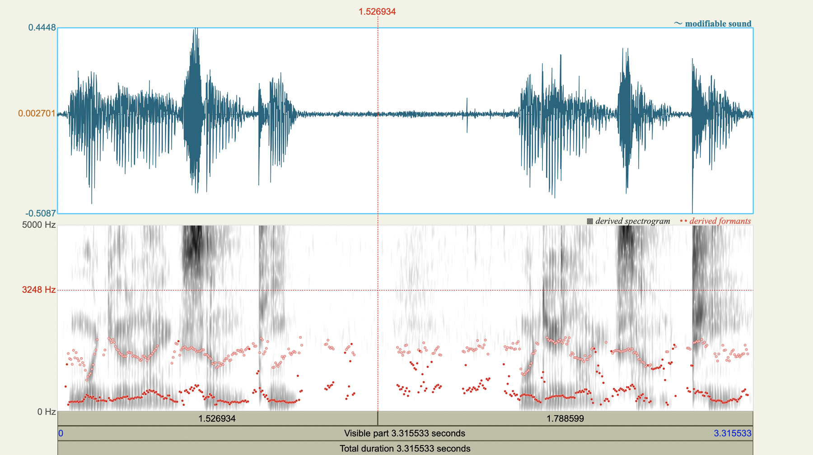
🇧🇪 vs 🇬🇧 « tea »
3.3.3 Variation interlinguistique : /t/
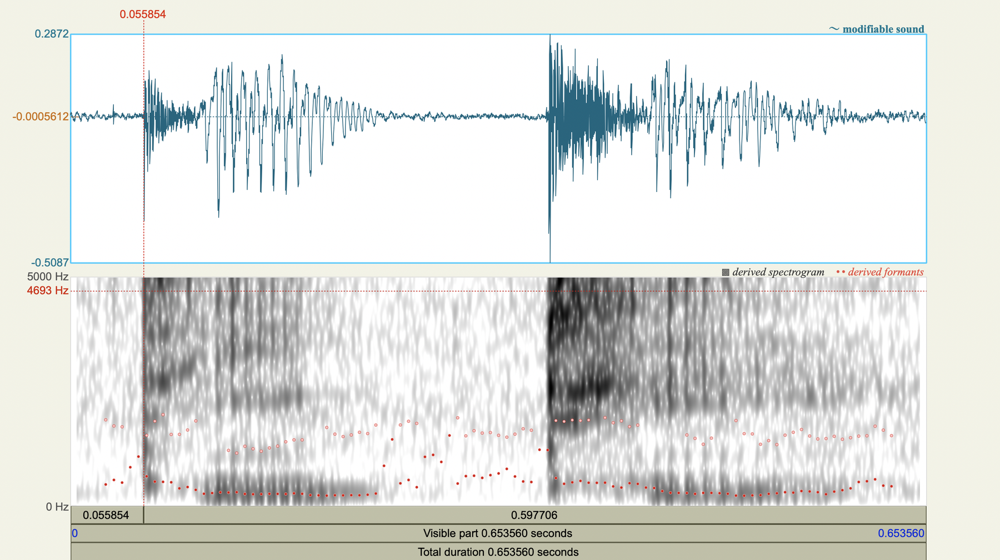
🇧🇪 vs 🇬🇧
3.3.4 Le VOT en français et en néerlandais
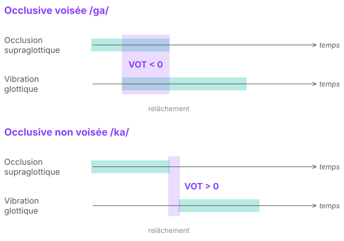
VOT (Voice Onset Time) : délai entre le relâchement de l’occlusion et le début du voisement (position initiale)
3.3.5 Le VOT en anglais
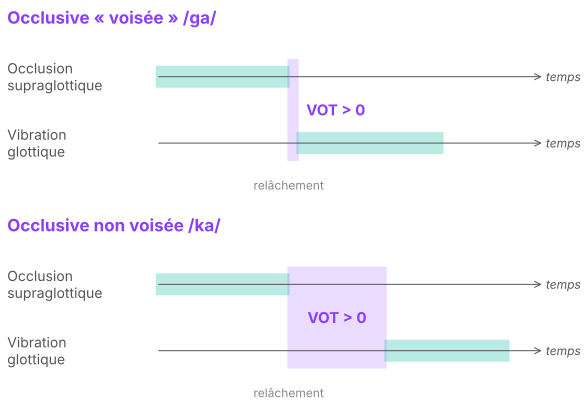
En anglais, le /ɡ/ « voisé » est souvent réalisé sans voisement pendant l’occlusion : c’est l’aspiration du /k/ qui fait la différence.
3.3.6 Trois catégories de VOT
- VOT négatif (prevoicing) : le voisement commence avant le relâchement de l’occlusion
- VOT positif court (short lag) : bref intervalle entre le relâchement et le début du voisement (0-30 ms)
- VOT positif long (long lag) : intervalle plus long entre le relâchement et le début du voisement (≈ 60 ms et plus)
3.3.7 Deux types de langues
- Langues à « vrai voisement » (voisement anticipé vs délai court)
- Contraste phonologique : « voisée » vs « non voisée »
- Réalité phonétique : VOT négatif vs VOT positif court
- espagnol, polonais, français, italien, russe, néerlandais
- Langues « aspirantes » (délai court vs délai long)
- Contraste phonologique : « voisée » vs « non voisée »
- Réalité phonétique : VOT positif court vs VOT positif long
- anglais, allemand, mandarin, islandais, danois
3.3.8 Bilan
- Le VOT est représentatif de la coordination entre articulateurs supralaryngaux et laryngaux
- Un même contraste phonologique (/p/ vs /b/) peut reposer sur des réalités phonétiques différentes selon les langues
Les modes d’articulation
3.4 Vue d’ensemble
3.4.1 Obstruantes et sonantes
- Obstruantes : l’air est fortement gêné
- occlusives (ou plosives) : fermeture complète puis relâchement
- fricatives (ou constrictives) : rétrécissement produisant une friction
- Sonantes : l’air s’écoule relativement librement
- nasales, latérales, approximantes, vibrantes
La tradition française distingue surtout le degré d’occlusion (occlusives vs constrictives) et range parfois [l] parmi les constrictives.
3.5 Les obstruantes
3.5.1 Les occlusives
- Fermeture complète du conduit buccal, voile du palais relevé
- Trois phases : mise en place de l’occlusion, tenue, relâchement (explosion)
- En français : [p, b] bilabiales, [t, d] dentales, [k, ɡ] vélaires
- Le contraste sourd/sonore repose sur le VOT (voir Le voisement)

3.5.2 Les fricatives : définition
- Constriction
- Friction
- Flux d’air turbulent
- Comment classer les fricatives (acoustiquement) ?
- voisement
- lieu d’articulation
- sibilance
- latéralité
3.5.3 Les fricatives : une articulation exigeante
Elles demandent donc :
- une grande coordination entre :
- le degré de constriction (max. 30 mm²)
- la vitesse du flux d’air sortant (30–300 cm³/s)
- ➔ une grande précision articulatoire
- d’où aussi une acquisition tardive
Débit d’air (Oaf), pression intra-orale (Po), pression sous-glottique (Ps)
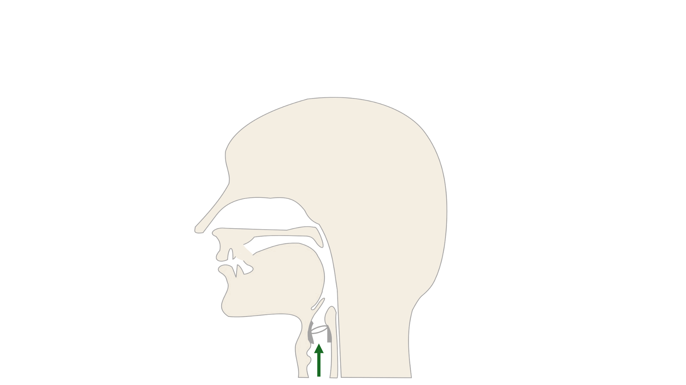
3.5.4 Les fricatives : typologie
- Voisement
- Sibilance ([s, z, ʃ, ʒ] vs [f, v])
- Durée
- Lieu d’articulation
- Latéralité
En français : [f, v] labiodentales, [s, z] dentales/alvéolaires, [ʃ, ʒ] palato-alvéolaires, [ʁ] uvulaire
3.6 Les sonantes
3.6.1 Une vocoïde
- Dimension phonétique : c’est une vocoïde (Pike, 1943) : un son avec vibration des plis vocaux, résonance supraglottique et aucune obstruction au centre de la bouche. Les voyelles et les semi-voyelles sont des vocoïdes.
- Dimension phonologique : elle peut être syllabique ou non
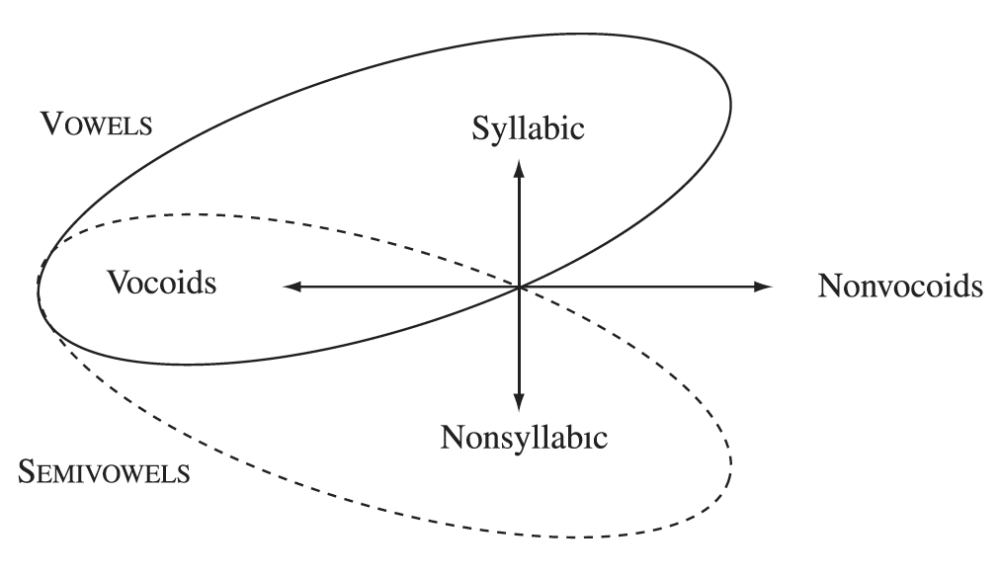
3.6.1.1 Les nasales
- Obstruction complète dans la cavité buccale (comme les occlusives)
- Le voile du palais est abaissé : l’air sort par la cavité nasale
- Lieux d’articulation : souvent les mêmes contrastes que les obstruantes, mais
- limités vers l’arrière à la luette (uvulaire)
- car plus en arrière, l’air ne pourrait plus passer par la cavité nasale
- En français : [m] mou, [n] net, [ɲ] vigne, [ŋ] camping
3.6.2
3.6.3 Les latérales
3.6.3.1 Articulation
- Les côtés de la langue se resserrent vers le centre de la bouche
- L’air s’écoule sur les côtés de la langue
- ou d’un seul côté
- En français : une seule latérale, [l] lit
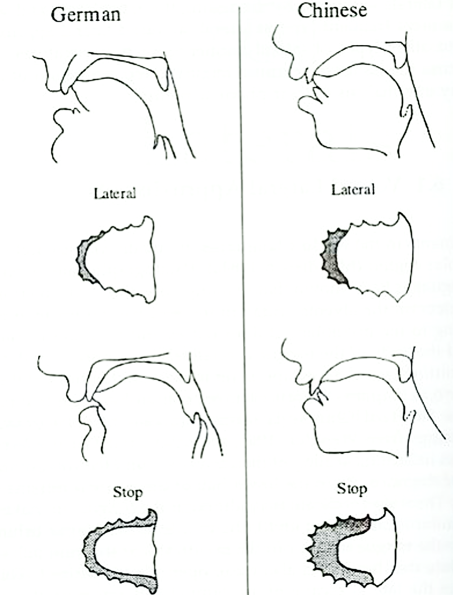
3.6.3.2 Modes d’articulation
- Approximante
- Fricative
- Affriquée
- Battue (tap) ou flap
3.6.3.3 Lieu d’articulation
- Souvent moins de contrastes que pour les obstruantes ; généralement coronales
- Le plus souvent dentales/alvéolaires
- Pas limitées aux coronales :
- dorso-palatale, p. ex. en italien
- vélaire, p. ex. en wahgi
3.6.3.4 Voisement
- Généralement voix modale
- Parfois voix craquée ou soufflée
- En français, [l] peut être dévoisé après une consonne sourde : classe [kl̥as] (voir L’assimilation)
3.6.4 Les approximantes
3.6.4.1 Définition
- Vocoïdes avec un peu plus de constriction que les voyelles
- Leur lieu d’articulation correspond plus ou moins à celui des voyelles fermées :
- palatale : [j] – [i]
- labio-vélaire : [w] – [u]
- labio-palatale : [ɥ] – [y]
- vélaire : [ɰ] – [ɯ]
3.6.4.2 Les semi-voyelles du français
- Sons intermédiaires entre voyelles et consonnes : toujours sonores et orales, mais ils ne peuvent pas constituer une syllabe à eux seuls
| Glide | Voyelle proche | Propriétés | Graphie | Exemples |
|---|---|---|---|---|
| [j] | [i] | palatal, non arrondi | i, y + voyelle | pied, yeux |
| [ɥ] | [y] | palatal, arrondi | u + voyelle | huit, fruit |
| [w] | [u] | vélaire, arrondi | ou, w + voyelle | oui, week-end |
3.6.5 Les vibrantes
3.6.5.1 Mécanisme
- Vibration de l’articulateur actif contre la cible
- Contrôle aérodynamique, comme le voisement
- petite ouverture & flux d’air d’une certaine force
- effet Bernoulli
- Ouverture & fermeture régulières
3.6.5.2 Caractéristiques acoustiques
- Phases :
- phase fermée : énergie largement absente
- phase ouverte : de type vocalique, avec une structure formantique
- transitions vocaliques (≈ intensité, structure formantique)
- Relation avec les autres modes d’articulation
- comme elles sont pilotées par l’aérodynamique ➔ elles peuvent dévier
3.6.5.3 Lieu d’articulation
- Apicale
- Uvulaire (français)
- Bilabiale (p. ex. kele)
- Laminale
- Ary-épiglottique
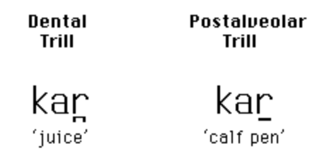
dentale kar « jus »
postalvéolaire kar « enclos à veaux »
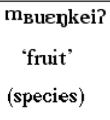
kele, bilabiale : « fruit »
3.6.5.4 Fréquence
- Fréquence (Ladefoged & Maddieson 1996) :
- fréquence = nombre de cycles par seconde
- Moyennes :
- apicale : 25 Hz
- uvulaire : 26 Hz, 30 Hz
- bilabiale : 25, 29 Hz
3.6.5.5 Voisement
- Généralement voisées
- parfois variation allophonique (cf. néerlandais, français)
- peut aussi être phonologique
3.6.5.6 Le /r/ en français
- Réalisations variées selon les régions et les locuteurs :
- [ʁ] fricative/approximante uvulaire (norme actuelle)
- [ʀ] vibrante uvulaire
- [r] vibrante apicale (régions, générations plus âgées)
- rat [ʁa] ou [ra], verre [vɛʁ] ou [vɛr] : même mot, même sens
➔ Variation libre : la différence phonétique n’est pas conditionnée par le contexte et ne change pas le sens. On transcrit le phonème /r/ (ou /ʁ/).
3.7 Exercices
3.7.1 Exercice 1 : caractéristiques communes
Donnez les caractéristiques communes des sons suivants.
- [ f v s z ɣ ʃ ʒ ]
- [ f p ɸ ]
- [ k x ɡ ɣ ŋ ]
- [ s t d z n ]
- [ ʃ j ʒ c ]
3.7.2 Exercice 2 : l’intrus
Quel est l’intrus dans les listes de sons suivantes ? Justifiez.
- [ f ɱ v t ]
- [ l ʒ ɲ ʃ ]
- [ p b m v ]
- [ b f ɱ v ]
- [ m n ŋ ɔ̃ k ]
3.7.3 Exercice 3 : en quoi diffèrent-ils ? (1/2)
| # | Sons | Exemples |
|---|---|---|
| 1 | [t] ~ [s] | tôt ~ sot |
| 2 | [x] ~ [ɣ] | lag ~ lagen (néerl.) |
| 3 | [f] ~ [s] | fou ~ sous |
| 4 | [k] ~ [ɡ] | car ~ gare |
| 5 | [k] ~ [x] | steek ~ steeg (néerl.) |
| 6 | [s] ~ [ʃ] | sot ~ chaud |
| 7 | [f] ~ [v] | fou ~ vous |
| 8 | [m] ~ [v] | mou ~ vous |
3.7.4 Exercice 3 : en quoi diffèrent-ils ? (2/2)
| # | Sons | Exemples |
|---|---|---|
| 9 | [m] ~ [n] | mou ~ nous |
| 10 | [t] ~ [l] | ta ~ là |
| 11 | [ʒ] ~ [j] | âge ~ ail |
| 12 | [s] ~ [x] | vast ~ vacht (néerl.) |
| 13 | [z] ~ [ɣ] | zat ~ gat (néerl.) |
| 14 | [m] ~ [ɱ] | omdat ~ omvang (néerl.) |
| 15 | [n] ~ [l] | nom ~ long |
| 16 | [d] ~ [t] | doux ~ tout |
3.8 Corrigés
3.8.1 Corrigé 1 : caractéristiques communes
| Sons | Caractéristiques communes | Traits |
|---|---|---|
| a. [ f v s z ɣ ʃ ʒ ] | fricatives orales | [+continuant, –sonorant] |
| b. [ f p ɸ ] | sourdes, labiales , obstruantes | [–voix, +labial, –sonorant] |
| c. [ k x ɡ ɣ ŋ ] | vélaires | [+vélaire] |
| d. [ s t d z n ] | alvéolaires/dentales , non latérales | [+dental, –latéral] |
| e. [ ʃ j ʒ c ] | région palatale : palato-alvéolaires [ʃ ʒ] et palatales [j c] | [+palatal] |
3.8.2 Corrigé 2 : l’intrus
| Liste | Intrus et justification |
|---|---|
| a. [ f ɱ v t ] | [ɱ] est nasal ; ou [t] est alvéolaire (non labial) |
| b. [ l ʒ ɲ ʃ ] | [ɲ] est nasal ; ou [ʃ] est sourd |
| c. [ p b m v ] | [p] est sourd ; ou [v] est labiodental |
| d. [ b f ɱ v ] | [b] est bilabial ; ou [f] est sourd |
| e. [ m n ŋ ɔ̃ k ] | [ɔ̃] est vocalique ; ou [k] est oral (non nasal) |
3.8.3 Corrigé 3 : en quoi diffèrent-ils ? (1/2)
| # | Sons | Différence |
|---|---|---|
| 1 | [t] ~ [s] | occlusive ~ fricative |
| 2 | [x] ~ [ɣ] | sourde (non voisée) ~ sonore (voisée) |
| 3 | [f] ~ [s] | labiodentale ~ alvéolaire |
| 4 | [k] ~ [ɡ] | sourde ~ sonore |
| 5 | [k] ~ [x] | occlusive ~ fricative |
| 6 | [s] ~ [ʃ] | alvéolaire ~ palato-alvéolaire |
| 7 | [f] ~ [v] | sourde ~ sonore |
| 8 | [m] ~ [v] | nasale bilabiale ~ fricative labiodentale |
3.8.4 Corrigé 3 : en quoi diffèrent-ils ? (2/2)
| # | Sons | Différence |
|---|---|---|
| 9 | [m] ~ [n] | bilabiale ~ alvéolaire |
| 10 | [t] ~ [l] | occlusive ~ latérale |
| 11 | [ʒ] ~ [j] | fricative ~ semi-consonne |
| 12 | [s] ~ [x] | alvéolaire ~ vélaire |
| 13 | [z] ~ [ɣ] | alvéolaire ~ vélaire |
| 14 | [m] ~ [ɱ] | bilabiale ~ labiodentale |
| 15 | [n] ~ [l] | nasale ~ latérale |
| 16 | [d] ~ [t] | sonore ~ sourde |
Le système consonantique du français
3.9 L’inventaire
3.9.1 Les consonnes du français
| bilabiale | labiodentale | dentale | palatale | vélaire / uvulaire | |
|---|---|---|---|---|---|
| plosive | p b | t d | k ɡ | ||
| fricative | f v | s z | ʃ ʒ | ʁ | |
| nasale | m | n | ɲ | ŋ | |
| latérale | l |
Dans chaque case : sourde à gauche, sonore à droite. Étiquettes de la tradition française : « dentale » couvre dentales et alvéolaires, « palatale » couvre [ʃ, ʒ] (palato-alvéolaires) et [ɲ].
3.9.2 Les consonnes du français en API
| API | Exemple |
|---|---|
| p | peau |
| b | beau |
| t | toute |
| d | doux |
| k | cou |
| ɡ | goût |
| f | fée |
| v | voûte |
| s | soupe |
| API | Exemple |
|---|---|
| z | zéro |
| ʃ | chou |
| ʒ | journal |
| ʁ | rage |
| m | mou |
| n | net |
| ɲ | vigne |
| ŋ | camping |
| l | lit |
3.10 Des sons aux phonèmes
3.10.1 Phonème et son
- Phonème : unité minimale, distinctive et non significative d’une langue ; noté entre barres obliques /p/
- Son : réalisation phonétique concrète d’un phonème ; noté entre crochets [p]
- Un phonème peut avoir plusieurs réalisations : ses allophones
3.10.2 Les paires minimales
- Deux mots qui ne diffèrent que par un seul son et ont un sens différent
- toit vs doit ➔ /t/ ≠ /d/
- bas vs pas ➔ /b/ ≠ /p/
- long vs rond ➔ /l/ ≠ /r/
- La différence peut se situer à n’importe quelle position dans le mot : chaud vs chat, coiffeur vs coiffure
Comparez
- français : rat [ʁa] = [ra] ➔ [ʁ] et [r] sont des allophones d’un même phonème
- espagnol : perro [pero] « chien » vs pero [peɾo] « mais » ➔ /r/ et /ɾ/ sont deux phonèmes
3.10.3 Variation conditionnée et variation libre
- Variation conditionnée : la réalisation dépend du contexte phonétique
- sombre [sɔ̃bʁ] vs pourpre [puʁpʁ̥] : le /r/ final est dévoisé après une sourde
- Variation libre : la réalisation ne dépend pas du contexte
- rat [ʁa] ou [ra], verre [vɛʁ] ou [vɛr]
3.10.4 L’assimilation
- Un son s’adapte à un son voisin et réduit la différence avec lui
- déclencheur : le son qui provoque l’adaptation
- cible : le son qui change
- Assimilation régressive : le déclencheur suit la cible
- médecin [metsɛ̃], anecdote [anɛɡdɔt]
- Assimilation progressive : le déclencheur précède la cible
- appris [apʁ̥i], classe [kl̥as]
La cible ne change pas entièrement : elle ne change que pour un seul trait (ici le voisement).
3.10.5 Exercice : assimilation
| Sans assimilation | Avec assimilation | ||
|---|---|---|---|
| abri | [abʁi] | appris | [apʁ̥i] |
| bière | [bjɛʁ] | pierre | [pj̥ɛʁ] |
| joie | [ʒwa] | choix | [ʃw̥a] |
| glace | [ɡlas] | classe | [kl̥as] |
- Quel est le déclencheur, quelle est la cible ? Assimilation progressive ou régressive ?
- Quelle caractéristique du déclencheur est responsable de l’assimilation ?
- Existe-t-il des phonèmes /ʁ̥/, /j̥/, /w̥/, /l̥/ en français ? Sinon, quel est leur statut ?
3.11 Les traits distinctifs
3.11.1 Qu’est-ce qu’un trait distinctif ?
- Un phonème = un faisceau de traits binaires (+/–) qui le distingue de tous les autres phonèmes de la langue (Chomsky & Halle 1968)
- /d/ est [+voix], /t/ est [–voix]
- Les traits correspondent en gros aux propriétés articulatoires, mais
- certaines distinctions sont simplifiées (4 lieux pour les consonnes)
- certains traits nouveaux sont introduits pour décrire des classes de phonèmes : [±sonorant], [±approximant]
3.11.2 Quatre types de traits
- Traits de sonorité (laryngaux) : [±voix]
- Traits catégoriels : [±vocalique], [±sonorant], [±approximant]
- Traits de lieu : [±labial], [±dental], [±palatal], [±vélaire]
- Traits de manière : [±continuant], [±nasal], [±latéral]
3.11.3 Les traits catégoriels
- [±vocalique] : voyelles [+] vs consonnes et glides [–]
- [±sonorant] : la consonne facilite la vibration des plis vocaux
- [+] : nasales /m, n, ɲ, ŋ/ et liquides /l, r/ (et toutes les voyelles et glides)
- [–] : occlusives et fricatives (obstruantes)
- [±approximant] : l’air passe librement par la bouche
- [+] : liquides /l, r/ (et glides, voyelles)
- [–] : toutes les autres consonnes
Tous les phonèmes [+sonorant] sont aussi [+voix], sauf en contexte d’assimilation.
3.11.4 L’échelle de sonorité
voyelles > glides > liquides > nasales > occlusives et fricatives
| Classe | Obstacle | sonorant | approximant |
|---|---|---|---|
| Glides | minimal, l’air passe sans problème | + | + |
| Liquides | obstacle, mais l’air passe (p. ex. sur les côtés) | + | + |
| Nasales | obstacle buccal, l’air passe par le nez | + | – |
| Occlusives, fricatives | obstacle sérieux qui gêne le passage de l’air | – | – |
Un processus qui touche les nasales et les glides touche aussi les liquides ; l’inverse n’est pas vrai (p. ex. le dévoisement après une sourde touche glides et liquides, pas les nasales).
3.11.5 Les traits de lieu et de manière
Lieu
| Phonétique | Phonologie |
|---|---|
| bilabiales | [+labial] |
| labiodentales | [+labial] |
| dentales | [+dental] |
| palatales | [+palatal] |
| vélaires | [+vélaire] |
/f/ = [+labial, –dental, –palatal, –vélaire]
Manière
- [±continuant] : obstacle partiel [+] (fricatives, liquides) vs complet [–] (occlusives, nasales)
- [±nasal] : l’air sort par le nez [+] ou par la bouche [–]
- [±latéral] : l’air passe sur les côtés de la langue [+] (/l/ seulement)
3.11.6 Tableau synthétique
| p | t | k | b | d | ɡ | f | s | ʃ | v | z | ʒ | m | n | ɲ | ŋ | l | r | |
|---|---|---|---|---|---|---|---|---|---|---|---|---|---|---|---|---|---|---|
| [vocalique] | – | – | – | – | – | – | – | – | – | – | – | – | – | – | – | – | – | – |
| [approximant] | – | – | – | – | – | – | – | – | – | – | – | – | – | – | – | – | + | + |
| [sonorant] | – | – | – | – | – | – | – | – | – | – | – | – | + | + | + | + | + | + |
| [voix] | – | – | – | + | + | + | – | – | – | + | + | + | + | + | + | + | + | + |
| [continuant] | – | – | – | – | – | – | + | + | + | + | + | + | – | – | – | – | + | + |
| [nasal] | – | – | – | – | – | – | – | – | – | – | – | – | + | + | + | + | – | – |
| [latéral] | – | – | – | – | – | – | – | – | – | – | – | – | – | – | – | – | + | – |
| [labial] | + | – | – | + | – | – | + | – | – | + | – | – | + | – | – | – | – | – |
| [dental] | – | + | – | – | + | – | – | + | – | – | + | – | – | + | – | – | + | – |
| [palatal] | – | – | – | – | – | – | – | – | + | – | – | + | – | – | + | – | – | – |
| [vélaire] | – | – | + | – | – | + | – | – | – | – | – | – | – | – | – | + | – | + |
3.11.7 Traits équipollents et privatifs
- Traits équipollents : les deux valeurs définissent chacune un groupe homogène
- [±sonorant] : sonantes vs obstruantes
- Traits privatifs : seule la valeur positive définit un groupe homogène ; la valeur négative regroupe des phonèmes hétérogènes
- [±latéral] : /l/ vs tout le reste
3.11.8 Questions
- Tous les phonèmes [+approximant] (/l/, /r/) sont aussi [+sonorant], mais l’inverse n’est pas vrai (/m/ est [+sonorant, –approximant]). Formulez deux autres généralisations à partir du tableau.
- Phonétiquement, /r/ est souvent une fricative uvulaire [ʁ]. Donnez au moins deux arguments pour ne pas le classer parmi les « véritables » fricatives /f, v, s, z, ʃ, ʒ/, en vous basant sur son comportement phonologique.
- Piste : /r/ n’a pas de partenaire sourd/sonore ; comme /l/, il forme des groupes avec une occlusive (pr-, bl-…) et se dévoise après une sourde.
- Indiquez les traits partagés par :
- les fricatives
- les nasales et les liquides
- les consonnes sourdes
3 cours processus d’assimilation voisement + dévoisement final + Le schwa (“e” muet) et la phonotactique (La syllabe)
3.1.2 Comment décrire une consonne ?